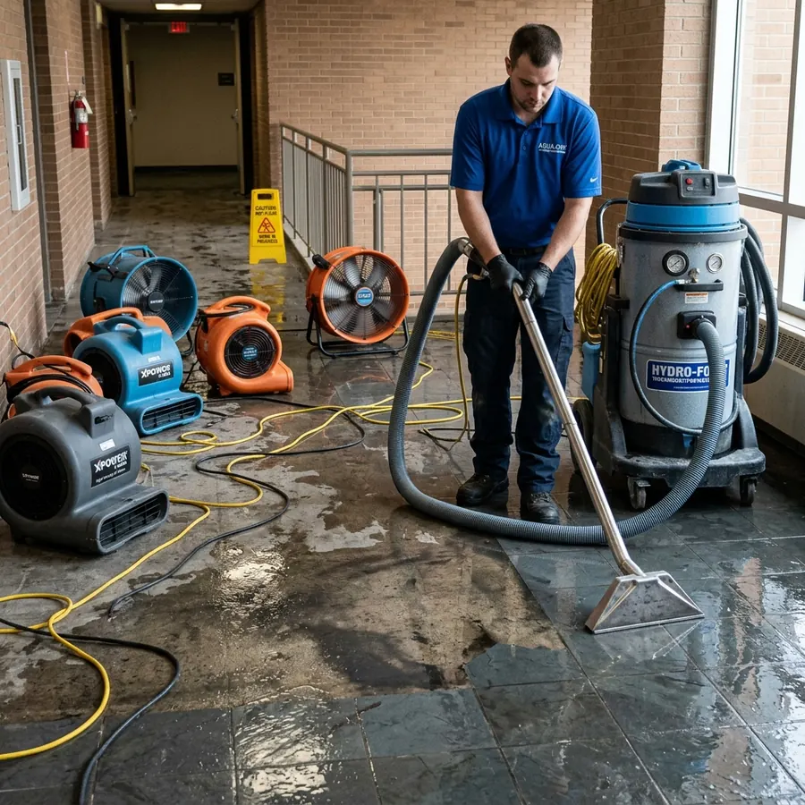
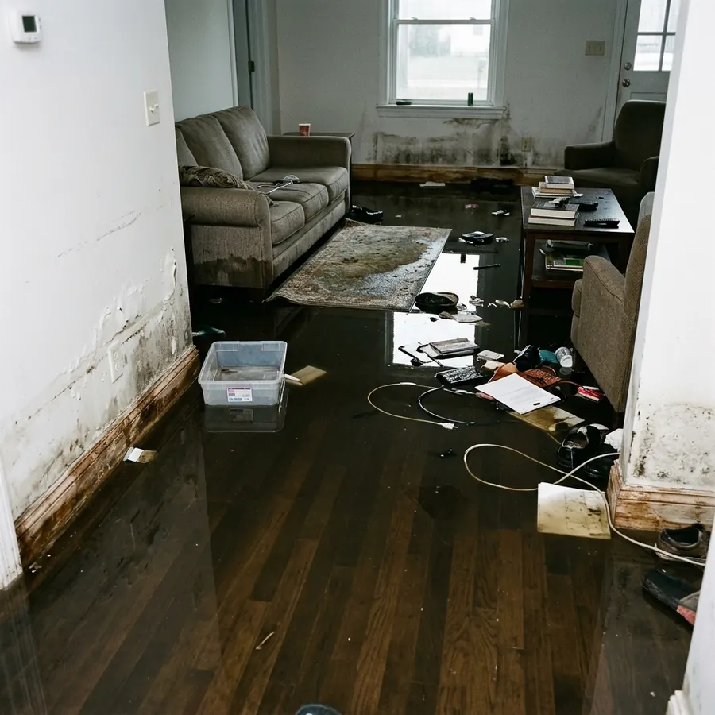
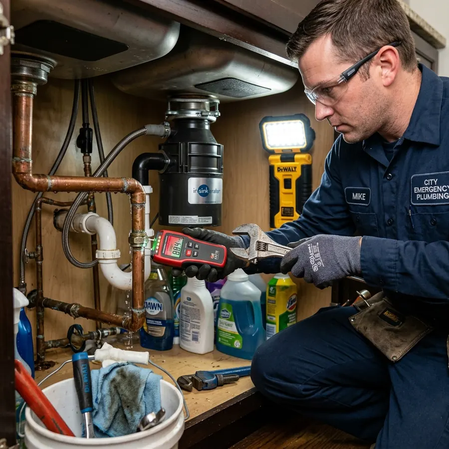
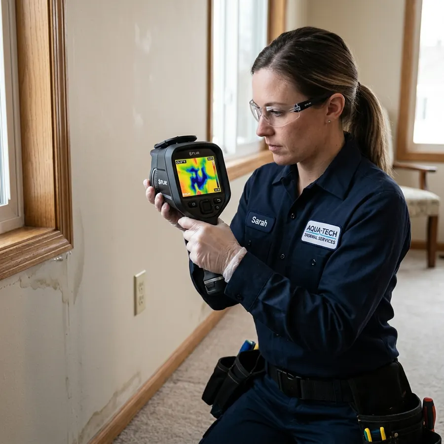

Water damage restoration
The full job after a leak or flood: extraction, drying, cleaning and repairs.
Learn moreBurst pipe, AC leak, hurricane flooding or sewage backup: call our free 24/7 line and we'll connect you with an independent restoration company that serves your area.

BeforeAfterLocal companies in our network handle emergency cleanup, drying, plumbing and repairs for homes and businesses.

The full job after a leak or flood: extraction, drying, cleaning and repairs.
Learn more
Emergency plumbing repair and cleanup after burst or leaking pipes.
Learn more
Get a rough planning range for cleanup and drying, based on area, water type and how far it spread.
A rough planning range, not a quote. Real prices depend on your home, the damage and the provider.
Call for a real estimateFlorida's climate and construction create risks you won't find in most states.
Hurricane season runs June 1 to November 30. Wind-driven rain, roof damage and surge bring water inside fast.
Florida's climate means wet drywall and carpet can start growing mold within 24 to 48 hours.
Air conditioners run most of the year. Algae-clogged drain lines are one of the most common indoor leaks.
Most Florida homes sit on concrete slabs, so a leaking pipe underneath can go unnoticed for weeks.
One number works statewide, from the Panhandle to the Keys.
Miami, Fort Lauderdale and West Palm Beach
Tampa, St. Petersburg and Clearwater
Orlando, Kissimmee and Daytona Beach
Jacksonville, St. Augustine and Gainesville
Fort Myers, Naples and Sarasota
Melbourne, Port St. Lucie and Vero Beach
Tallahassee, Pensacola and Panama City
Key West, Marathon and Key Largo
One call, no forms, no cost to you.
Tell us what happened and where. It takes about two minutes.
We route your call to an independent restoration company that serves your area.
Confirm license, insurance, arrival time and pricing before you agree to anything.
The company inspects, measures moisture and explains the work and cost.
Water is removed, the home is dried and repairs begin once readings are normal.
Yes. Calling is free for homeowners. We're a referral service: the local company you're connected with pays us for the introduction, and you agree on the work and price directly with them.
An independent, local water damage restoration or plumbing company that serves your area. Ask them about their Florida licensing, insurance and certifications (such as IICRC) when you talk.
No. We don't employ crews or own equipment. We connect you with independent local companies.
It depends on the company, your location and demand, especially after storms. Ask the provider for their expected arrival time before you agree to service.
Many restoration companies work with insurers. Ask the company when you call, and check your policy for what's covered.
Stop the water if you safely can, turn off power to wet areas, move valuables to a dry place and take photos for insurance.
Free to call. We'll connect you with a local Florida company that can help.